踩點日記
毎一餐，
都値得被好好記下
收藏人生中每個美味瞬間。
-

-

-

- 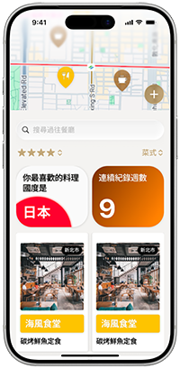
使用者心聲
聽完功能，也聽聽他們怎麼說。
終於找到適合我的美食記錄app！以前用筆記軟體超亂，這個排版模板真的太美了，朋友都問我怎麼做的。AI修圖功能超實用，餐廳燈光再暗也不怕。年度回顧讓我發現自己一年吃了127間餐廳，超有成就感！
美食獵人 Cindy
star_ratestar_ratestar_ratestar_ratestar_rate身為美食部落客，這app幫我省了超多時間。AI文案助手寫出的描述比我自己寫的還生動，地圖功能讓我規劃美食路線超方便。模板更新很快，每次發文都有新鮮感，強烈推薦給愛記錄的人！
吃貨日常 Leo
star_ratestar_ratestar_ratestar_rate很喜歡這個app的設計感，介面簡潔好用。評價篩選功能很實用，想吃義大利麵或日料時馬上找到口袋名單。唯一小建議是希望能加入好友功能，和朋友分享美食地圖會更棒！整體來說非常滿意。
珍珍愛吃
star_ratestar_ratestar_ratestar_ratestar_rate好多功能，
好好用
你最想要的功能，我們全都有。
地圖瀏覽
在地圖上標記吃過的每間餐廳。視覺化美食版圖，快速規劃回訪路線。發現未探索區域，成為美食地圖達人。
評價篩選
透過評分、標籤、價位、料理類型多重篩選。瞬間找到想要的餐廳。專屬美食資料庫，比任何app都懂你。
模板定期更新
每月推出新排版模板，配合節慶與流行趨勢。從簡約到華麗風格，總有一款符合當下心情。
AI快速修圖
一鍵優化美食照片，自動調整亮度、對比、飽和度。讓每道菜呈現最誘人樣貌，專注記錄體驗。
超多亮點，超值得
local_cafe takeout_dining
多層回顧，更深入認識自己
新功能積極開發中

 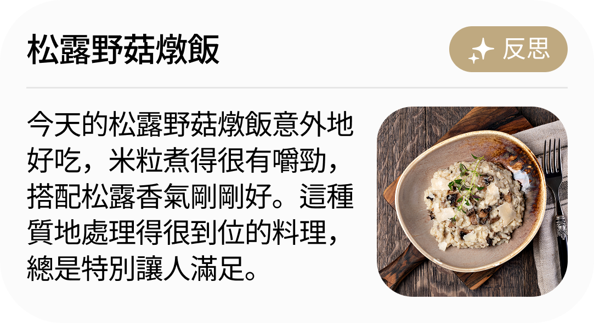
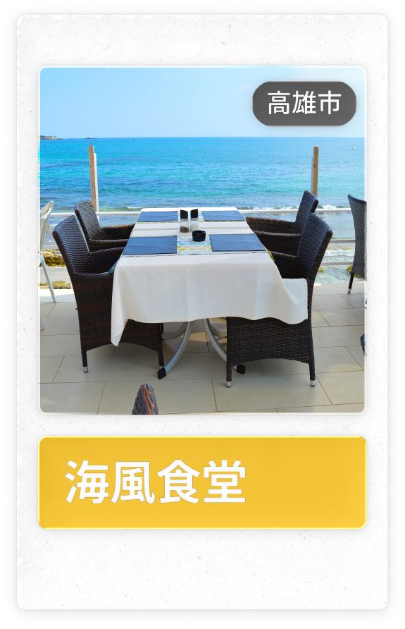
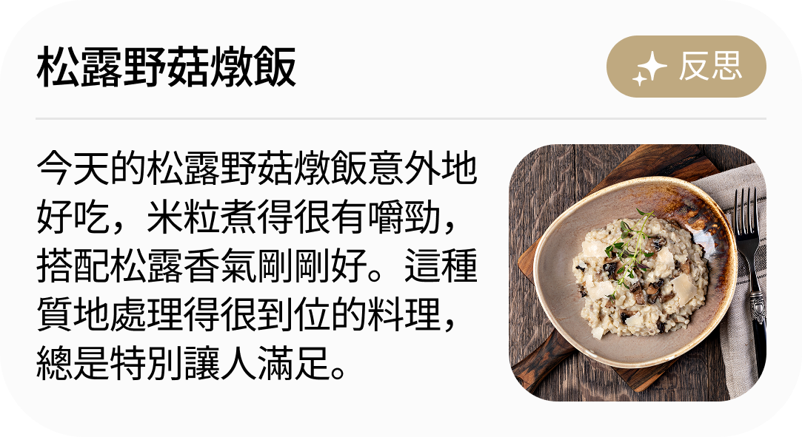
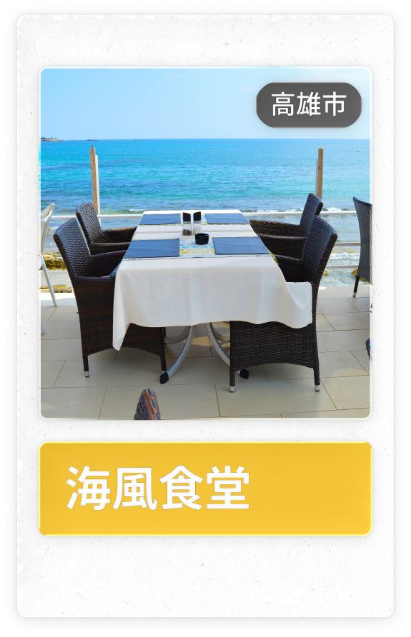
 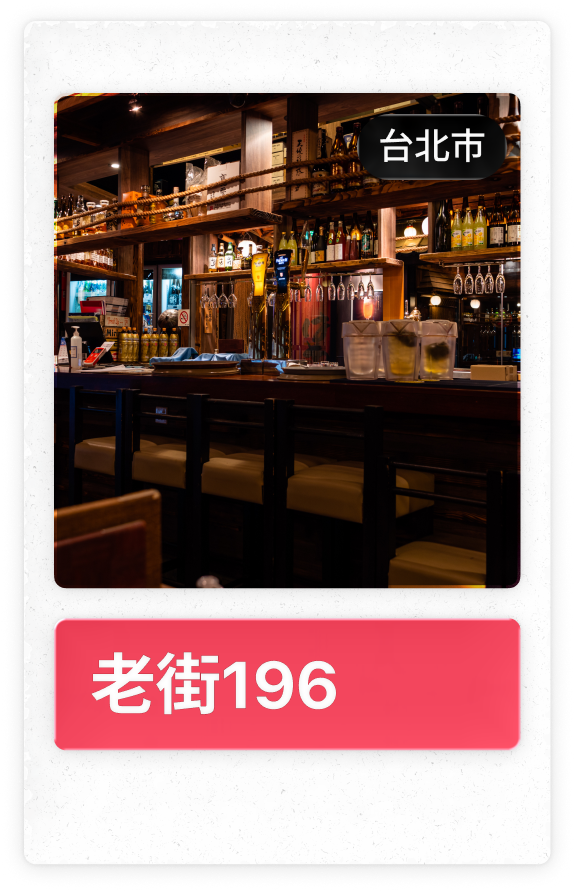
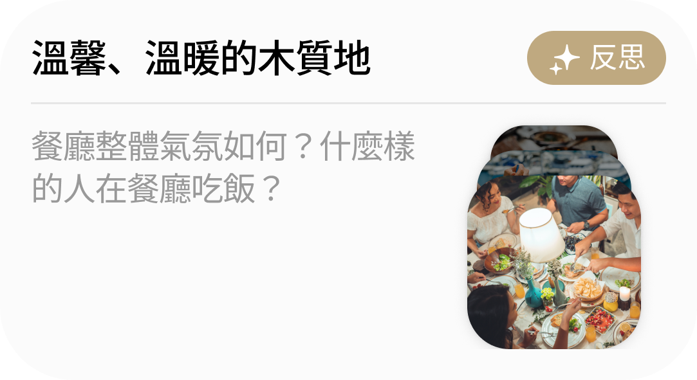
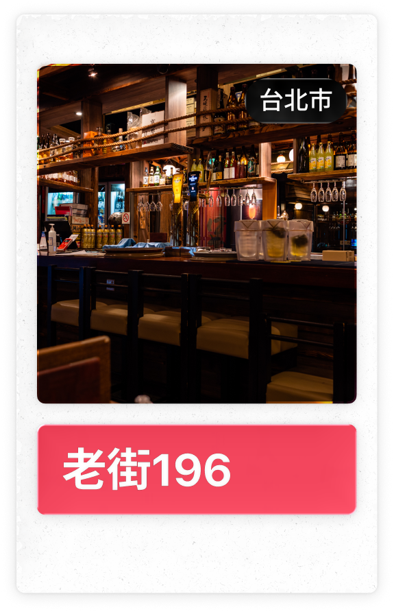
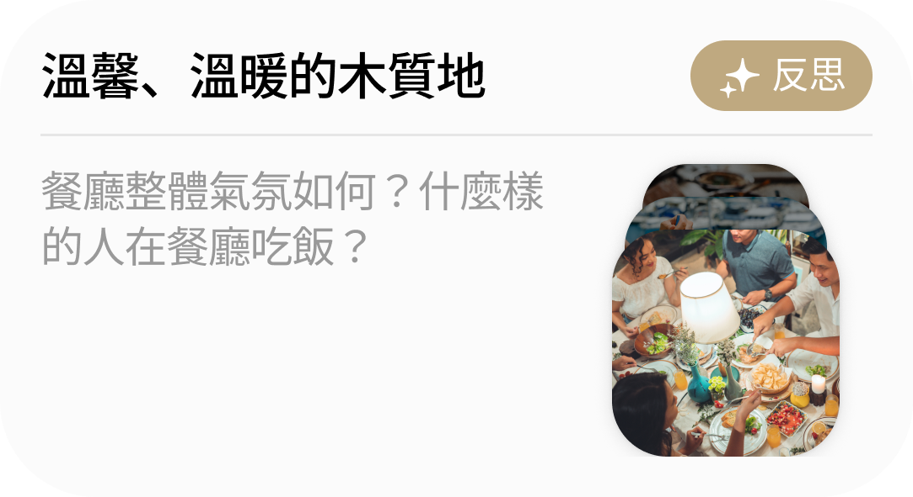
 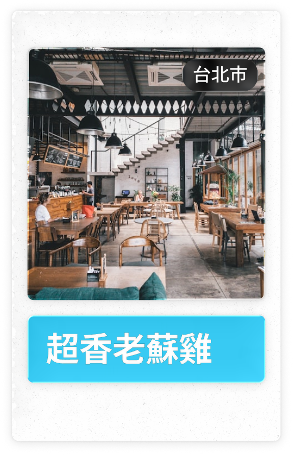
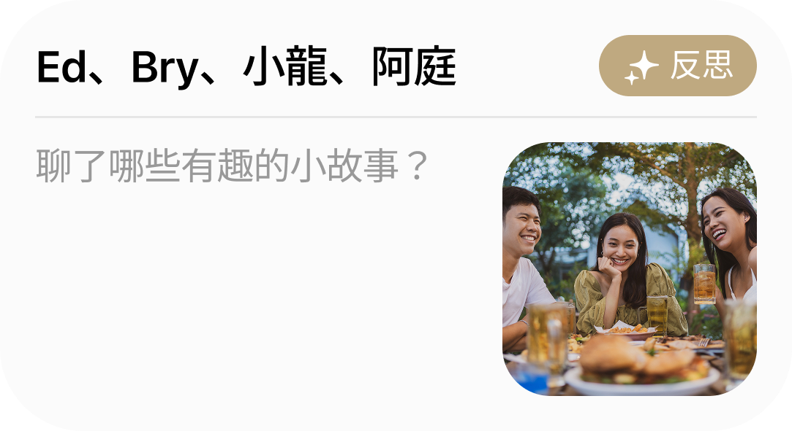
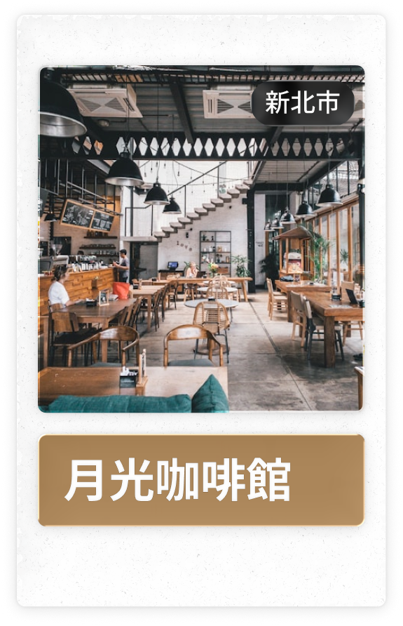
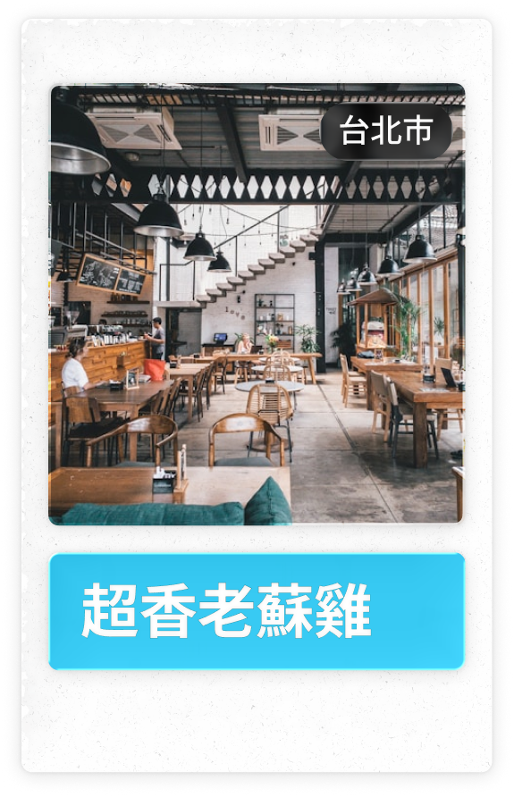
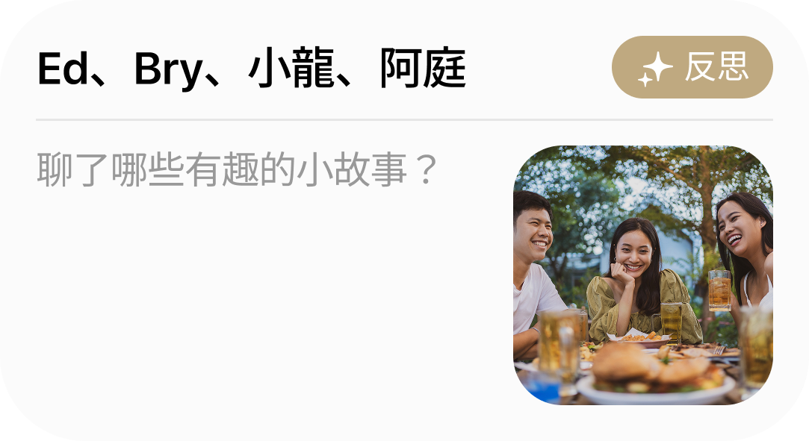
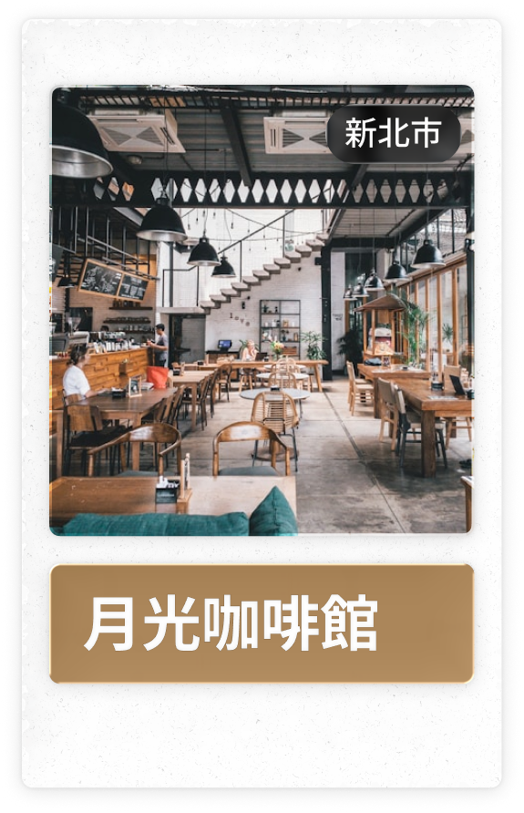
下一餐，讓踩點日記和你一起記錄
開始記錄旅程
有問題，
就有答案。
常見問答這裡看。
App需要付費嗎？
目前開發階段的App是免費的。我的餐廳記錄資料安全嗎？
絕對安全。所有資料都經過加密儲存在雲端，只有你本人可以存取。我們也提供本地備份功能，你可以隨時匯出資料。我們重視隱私，不會將你的個人資料用於任何商業用途。可以匯入其他app的餐廳記錄嗎？
可以！我們支援從Google Maps、Instagram、其他筆記app匯入資料。只需在設定中選擇「匯入資料」，按照步驟操作即可。照片、文字、地點資訊都能完整保留。AI修圖會讓照片看起來很假嗎？
不會。我們的AI修圖專門針對美食攝影優化，保持食物的真實質感，只調整光線、色溫和清晰度。你也可以調整修圖強度，或選擇不同風格濾鏡，完全掌控最終效果。可以和朋友一起共編美食清單嗎？
目前支援分享單篇記錄給朋友查看，協作清單功能正在開發中，預計下季度推出。屆時你可以和朋友建立共同的「待吃清單」或「推薦名單」，一起探索美食！最新消息
開始記錄旅程，和我們一起。

獨自用餐也能很享受：一個人吃飯的儀式感提案
一個人吃飯不是孤單，而是與自己相處的quality time。分享如何為solo dining創造儀式感，從選餐廳到記錄當下，享受專屬自己的美好食光。
閱讀更多 →